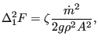

Next: Pipe, Gate Valve Up: Fluid Section Types: Liquids Previous: Pipe, Diaphragm Contents
A bend (Figure 119) is characterized by head
losses
 of the form:
of the form:
|  | (158) |
where  is a head loss coefficient depending on the bend angle
is a head loss coefficient depending on the bend angle  and the ratio of the bend radius to the pipe diameter ,
and the ratio of the bend radius to the pipe diameter ,
 is the mass flow, g is the gravity acceleration and
is the mass flow, g is the gravity acceleration and  is the
liquid density.
is the
liquid density.  is the cross section of the pipe. Values for
is the cross section of the pipe. Values for  can be found in file “liquidpipe.f”.
can be found in file “liquidpipe.f”.
The following constants have to be specified on the line beneath the *FLUID SECTION, TYPE=PIPE BEND card:
 denotes the roughness of the pipe:
denotes the roughness of the pipe:  applies to an extremely
smooth pipe surface,
applies to an extremely
smooth pipe surface,  to a very rough surface. The gravity acceleration must be specified by a gravity type
*DLOAD card defined for the elements at stake. The material
characteristic
to a very rough surface. The gravity acceleration must be specified by a gravity type
*DLOAD card defined for the elements at stake. The material
characteristic  can be defined by a
*DENSITY
card.
can be defined by a
*DENSITY
card.
Example files: centheat1, pipe.